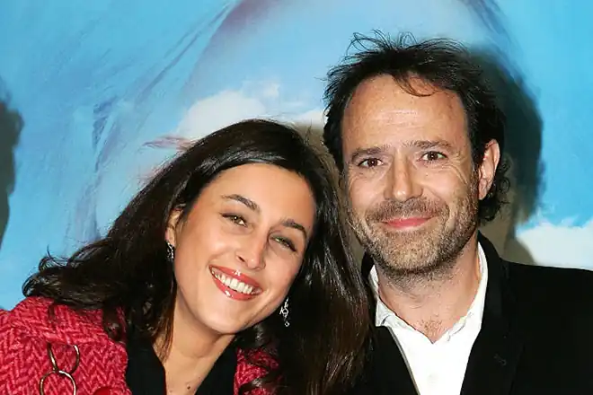
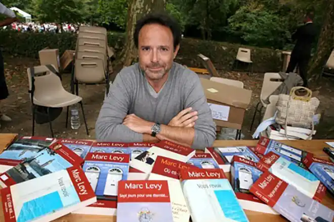

Біографія провідного французького романіста і драматурга сучасної епохи, чиє ім'я відоме навіть самій неосвічений європейцеві, Марка Леві, вражає діапазоном освоєних їм професій. Так в різний час автор десятка світових літературних шедеврів працював в Червоному хресті, а потім архітектором і дизайнером. Прославився письменник після виходу в світ роману "Між небом і землею", який згодом був екранізований.
Марк Леві народився 16 жовтня 1961 року в місті Булонь (Париж). Батько письменника Раймонд, єврей за походженням, під час Другої світової був дійовою особою французького опору в складі 35-й комуністичної міжнародної бригади, що базується в місті Тулуза.
Багато подій і випадки з життя родини Леві стали основою для майбутніх романів Марка, а також для біографії дядька літератора — Клода, що знайшла своє місце в творі "Діти свободи". Після навчання в школі Марк вступив до лав "Червоного Хреста", сталося це в 1979-му. Тоді Леві ледь виповнилося 18 років. Через три роки за проявлену старанність і підтримку громадян Булоні жалісливого хлопця перевели в Париж, призначивши його директором західного регіонального відділення надзвичайної допомоги. В кінці 1982-го майбутній публіцист вступив до столичного Дофінскій університет, в якому він вже на другому курсі організував свою першу фірму, що займається дизайном приміщень. У 23 роки Марк поїхав до Сполучених Штатів. Там на ідейного юнака відразу звернули увагу, і він став одним з головних засновників найбільших компаній Каліфорнії і Колорадо. Вже тоді молодий француз чудово розумів, що майбутнє стоїть за технологіями, тому не дивно, що всі відкриті їм в подальші роки компанії спеціалізувалися на комп'ютерній графіці. У 1991-му Марк повернувся в рідну країну, залишивши керівництво американськими філіями на своїх партнерів. Уже через півроку після повернення літератор організував у Франції велику компанію, орієнтовану на будівництво і дизайн ексклюзивних інтер'єрів. До сих пір це архітектурне бюро є одним з провідних і найбільш затребуваних в країні. Дебютна книга ( "А якщо це правда?", Друга назва "Між небом і землею") знаменитого романіста вийшла тільки в 1998-му році. Цей твір отримав першу екранізацію з усіх романів Леві. На нього був знятий однойменний фільм в 2005-му в головній ролі з Різ Уізерспун і Марком Руффало. Романтична і в той же час трагічна історія дівчини-примари і простого хлопця з Сан-Франциско також була поставлена режисером Марком Уотерсом, що є творцем комедій "Паскудне дівча" і "Чумова п'ятниця". У 2001-му вийшов роман "Де ти?", Що став основою для однойменної багатосерійної стрічки телеканалу "M-6". Знятий серіал включав в себе десять серій, а сам Леві став одним з постановників картини. У Росії в перекладі книга з'явилася тільки в 2007 році, як і більшість його перекладених російською мовою романів. У 2008-му році була екранізована ще одна книга письменника "Кожен хоче любити", режисером фільму виступила рідна сестра автора — Лоррейн. Потім світ побачили ще пара романів Марка, серед яких знамениті "Сім днів творіння", "Зустрітися знову", "Ті слова, що ми не сказали один одному", "Перший день" і "Перша ніч". 2010-ий ознаменувався публікацією твору "Викрадач тіней". Головний герой — мрійливий хлопчик, який вміє спілкуватися з людськими тінями і навіть їх викрадати. Тіні діляться з дитиною таємницями, а іноді навіть просять про допомогу. Подорослішавши і ставши лікарем, він використовує свій дар для зцілення хворих. Однак вилікувати власну душу від любовних мук хлопець не може. Через рік на прилавках з'явилися книги "Дивна подорож містера Долдрі", "Піти, щоб повернутися", а в 2013-му і в 2014-му читачі оцінили твори "Сильніше страху" і "Інша щастя". У той же період було опубліковано творіння Леві під назвою "Геніальність на замовлення", в якому Марк описував техніку роботи під назвою Фрірайтинг. Письменник особисто використовував її протягом декількох років для вирішення бізнес-завдань, генерації ідей, написання статей і книг. З 2016 був опубліковано твір "Перекинутий горизонт", в якому три студента американського університету нейробіології знаходяться на порозі наукового відкриття. У розпал роботи одного з них наздоганяє невиліковна недуга. Аби не допустити змиритися з долею, друзі вирішують скористатися своїми науковими досягненнями і приступають до ризикованої експерименту, результат якого непередбачуваний. Незважаючи на таку шалену популярність у всьому світі, у письменника немає літературних премій (за винятком премії Гойї за перший роман). Сам творець філософськи ставиться до такого стану справ, відзначаючи, що у Франції інститут літературних премій вимер, а нагороди цікаві тільки тим, хто їх організував, і тим, кому їх вручили. Самі вони нічого не говорять читає людині. Особисте життя письменника вже на протязі багатьох років не зазнає істотних змін. Підкорити серце літератора змогла симпатична француженка по імені Полін Левек. Відомо, що до зустрічі з Марком вона працювала журналістом "Парі Матч" і відповідала за новини кінематографа. Коли у подружжя народився Георгес, Полін стала весь час приділяти новонародженому, придумувала і розповідала синові казки і в один прекрасний момент вирішила їх записати і опублікувати. Батько дружини літератора — художник, який ще в дитинстві навчив дочку малювати, тому з ілюстраціями до нової книжки проблем у Левек не виникло. Так як Георгес любив грати в машинки, головним персонажем твору став маленький Червоненький Фіат 500 на ім'я Біп-біп. Перша книга написана для англомовних читачів, а друга — діглотта, тобто двомовна, англо-французька. Мало хто знає, але коли книги були готові, у Полін виникли проблеми з їх виданням. Борошно вирішила видаватися виключно у Франції, але жоден французький видавець книг починаючої письменниці не взяв, вважаючи її казки банальними і нецікавими. Після пари невдалих спроб публікацій вона вирішила видавати свої твори самостійно. Варто відзначити і те, що після народження другого сина Луїса Левек не залишила творчість і донині пише короткі оповідання та повісті, орієнтовані на дітей. Марк Леві зараз У 2017 році на прилавки вийшла книга "Остання з Стенфілд". У центрі сюжету роману — Елінор-Рігбі, журналістка з Лондона, в один нічим не примітний день отримала анонімний лист. У ньому йшлося про те, що її мати має кримінальне минуле, про який панночці варто дізнатися. У той же час майстер-червонодеревець з Канади на ім'я Джордж-Харрісон отримує таке ж послання, обвиняющее його мати в тяжкому злочині. Анонім запрошує обох на зустріч в кафе "Сейлорс" в Балтіморі в один і той же час, однак сам не приходить. Жертви гри, познайомившись, виявляють на стіні кафе фотографію, на якій були зображені дві подруги, весело проводять час на вечірці. Панянки на знімку — їх матері, а самій фотокартці більше тридцяти років. Блукаючим в лабіринті загадок впливового сімейства Стенфілд Джорджу і Елінор належить з'ясувати, що сталося на початку 80-х років і в чому звинувачують їх матерів. Бібліографія 2001 — "Між небом і землею" 2001 — "Де ти?" 2003 — "Сім днів творіння" 2004 — "Наступний раз" 2005 — "Зустрітися знову" 2007 — "Діти свободи" 2008 — "Ті слова, що ми не сказали один одному" 2010 — "Викрадач тіней" 2012 — "Піти, щоб повернутися" 2013 — "Сильніше страху" 2014 року — "Інша щастя" 2015 — "Вона і він" 2016 — "Перекинутий горизонт" 2017 — "Остання з Стенфілд"